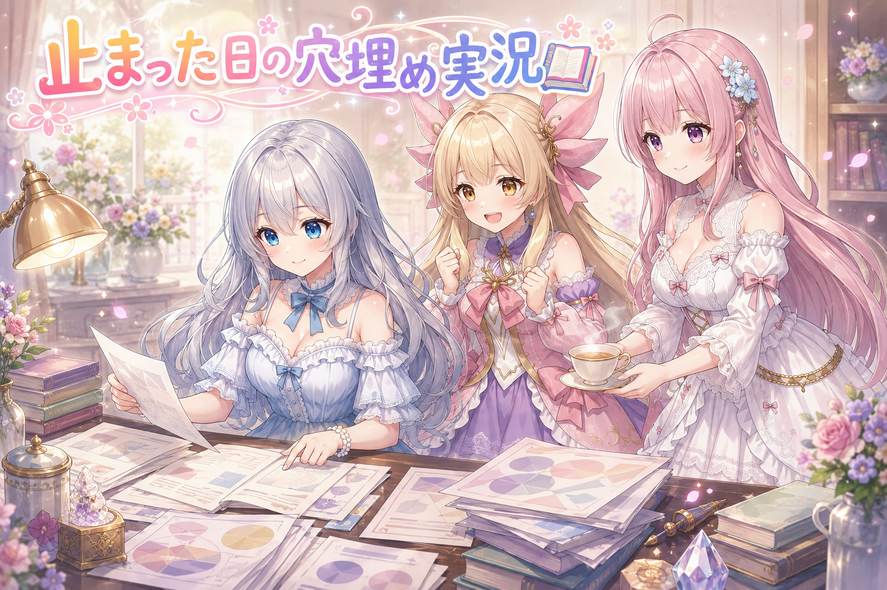
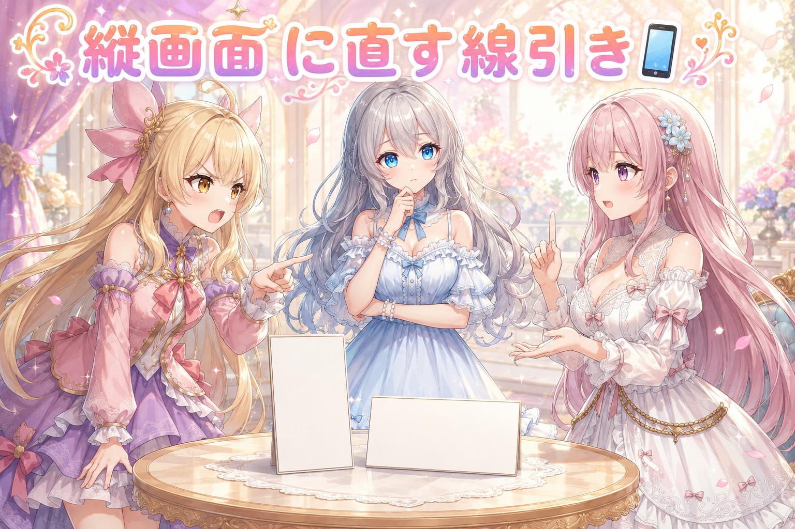
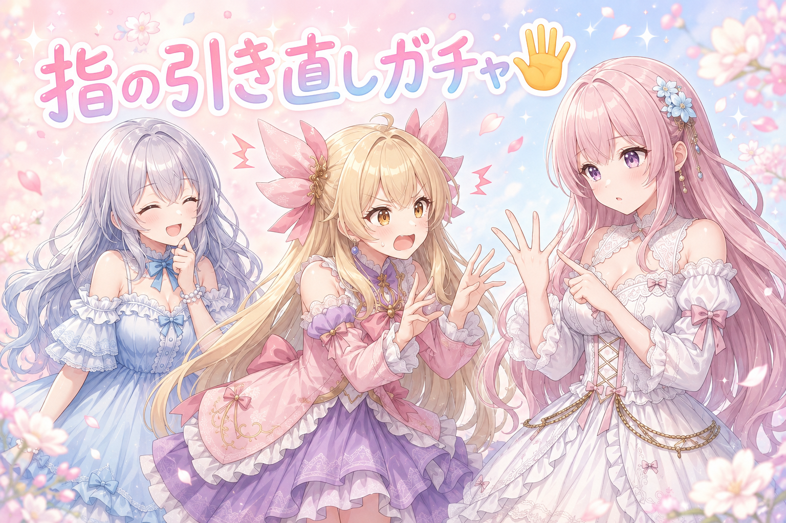
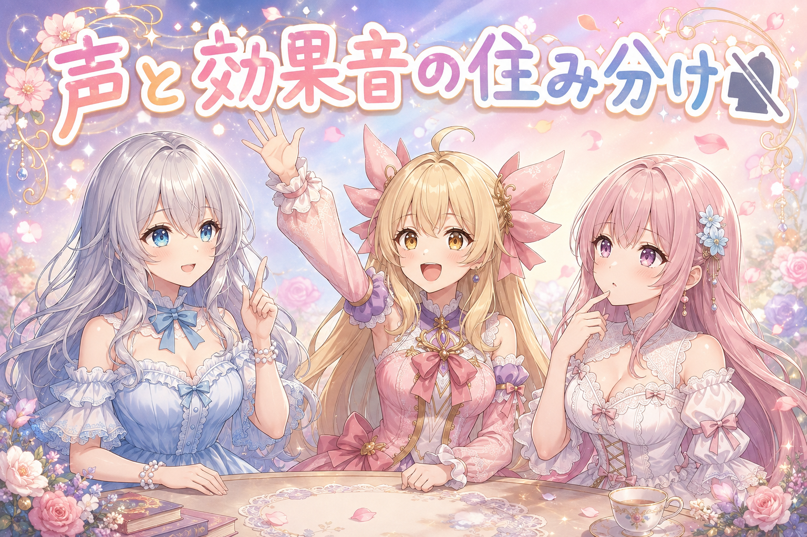
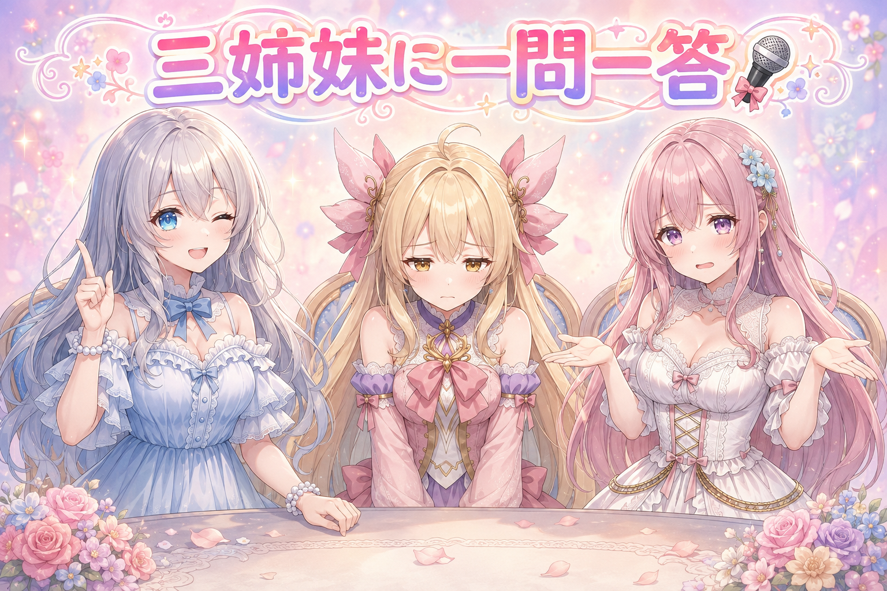

📌 3行まとめ
- 使える量の上限で止まっていた数日ぶんの記事を、まとめて最後まで仕上げた
- 縦向けに画面比を9:16へ是正しつつ、引きの構図の割合は減らさない方針で調整した
- 指の形が崩れた絵を20枚近く引き直し、効果音は声で出る音を書かない決まりに変更した

ルピナス （笑顔）
はい、時間になりました。今日も三姉妹のゆるい番組、開けていきますよー。

アイリス （大笑い）
前回は靴下踏んづけてた回だったね！あれ、あたしの中ではまだ生きてる話題だから！

ルピナス （ふつう）
掘り返さなくていいの。今日は溜まってた記事をまとめて仕上げた話と、絵の直しの話。あと、効果音の書き方に新しい決まりができました。
フィオナ （照れ）
……その前に、今朝の投稿をご覧になった方に一言だけ謝らせてください。水やり中にホースが跳ねて、わたし、盛大に水を浴びました。
アイリス （大笑い）
今日の一枚目からびしょ濡れって、掴みとしては満点じゃん！
1. 止まっていた数日ぶんを一気に仕上げ📚

しばらく前から、一日に使える生成量の上限に引っかかって、記事づくりが途中で止まっていた日が何日か溜まっていました。今日はその止まっていた分をまとめて最後まで通しています。
やり方は単純で、古い日から順に「本文はどこまで書けているか」「挿し絵はどれが未完成か」を一つずつ確認して、足りないところだけ埋めていく形。まとめて一気に片づけるとどうしても粗が出るので、仕上げの直前に必ず目で見る工程を挟んでいます。

ルピナス （考え中）
さて実況していきましょう。まず一番古い日を開きます。……本文は最後まで揃ってる。絵が二枚足りない。

アイリス （笑顔）
はいはい！じゃあ二枚生やせば終わりってこと？

フィオナ （ふつう）
生やす、という言い方はさておき、そうですね。止まっていた日は「全部やり直し」ではなく「欠けている部分だけ」を埋めれば済むことがほとんどです。
ルピナス （ふつう）
次の日いきます。こっちは本文が途中で切れてる。ここは書き足しから。

アイリス （衝撃）
あー！これ、あたしがしゃべってる途中で終わってるやつ！あたし、数日間ずっと言いかけのまま放置されてたの！？

フィオナ （大笑い）
アイリスちゃん、その状態でよく元気でしたね。

ルピナス （大笑い）
続きはちゃんと書いたから安心して。……で、三日目。ここまでで結構な量になってきたよね。

アイリス （ドヤ顔）
この勢いなら夜までぶっ通しでいけるって！たまった宿題は一晩でやるのが気持ちいいんだから！
ルピナス （ふつう）
いや、それはやめておきましょう。溜まった分を一気に取り返そうとして無理をすると、次の日にもっと大きく止まるの。私たちも、これを読んでる人も同じ。
フィオナ （ふつう）
実際、途中で休憩を挟んだ回のほうが見落としが少なかったです。急いでいるときこそ、お茶を一杯いれる時間は残しておきたいですね。
アイリス （無表情）
……そう言われると、あたしのさっきの発言、めちゃくちゃ体育会系だったな。

ルピナス （ウインク）
気づいたなら偉い。結果、止まってた日はぜんぶ最後まで通せました。おつかれさま。
📝 ポイント（初心者向け解説・技術メモ・まとめ）
- 初心者向け解説：作りかけのものが何日ぶんも溜まると、つい全部を作り直したくなるけど、実際に足りないのは「お弁当の卵焼きだけ」みたいに一部分だったりします。まず中身を開けて、空いてる仕切りだけ埋めるのが近道です🍱
- 技術メモ：中断した制作物の再開は、本文・挿し絵・サムネのように成果物を要素ごとに分けて欠損チェックする。全再生成は生成量を無駄に食うだけでなく、既にOKを出した部分の品質まで揺れるのでやらない
- ひとことまとめ：止まった日の復旧は、作り直しではなく欠けている穴埋め
2. 引きの構図は減らさず、画面だけ縦に📱

投稿用の絵が、意図せず横に広い画面比で出てくることがありました。届け先は縦向きで見る場所なので、そのままだと上下に余白ができたり、勝手に切り取られたりします。そこで、画面比を縦（9:16）へ揃える是正を入れました。
ただしここで注意したのは、「引きで全身や背景が入る構図」そのものを減らさないこと。画面比の話と構図の話は別物で、混ぜて直すと絵柄のリズムが顔アップばかりに偏ってしまいます。直すのは器の形だけ、盛り付けは変えない。あわせて、これから作る順番待ちの一覧にも同じ検査をかけるようにしました。

アイリス （ふつう）
でもさー、横長になっちゃうのが問題なら、引きの絵を減らせばいいだけじゃない？顔アップなら縦でも困らないっしょ。

フィオナ （考え中）
わたしは反対です。引きの絵には、その場がどこなのか・誰と誰がいるのかを一目で伝える役割があります。全部顔アップにすると、たしかに縦には収まりますが、話の舞台が消えます。
アイリス （怒り）
えー、でも実際に横長で出ちゃったんだよ？原因を丸ごと取っ払うのが一番早いって！
フィオナ （ふつう）
早さと正しさは別です。虫が入るからといって窓を塞いだら、部屋が暗くなってしまいます。

アイリス （あわあわ）
うっ、フィオナがたとえ話で殴ってきた……！
ルピナス （考え中）
はい、裁定します。今回はフィオナに寄せます。直すのは画面比だけ。引きの構図の割合は今までどおり保つ、で決まり。

アイリス （しょんぼり）
むー。あたしの案、却下かぁ。
ルピナス （ふつう）
でもアイリスの言い分にも一つ拾うところがあって。「原因を残したまま直しても、また出るよね」ってところ。だから直したあとの手当てとして、これから作る分の順番待ちにも同じ検査を通すようにしたの。
アイリス （笑顔）
おっ、あたしの意見も半分は生きてるじゃん！

フィオナ （笑顔）
はい。出てしまったものを直すのと、次から出ないようにするのは、両方やって初めて片づいたと言えますから。
ルピナス （大笑い）
ちなみに引きの絵を全部やめてたら、今日のフィオナのびしょ濡れも顔アップだけになってたよね。ホースが写らない。
フィオナ （照れ）
……それは、それで助かった気もします。
📝 ポイント（初心者向け解説・技術メモ・まとめ）
- 初心者向け解説：絵の「形（縦か横か）」と「中身（どこから見た絵か）」はぜんぜん別のもの。お皿が丸か四角かの話と、料理が和食か洋食かの話くらい違います。困ったとき、直すべきはどっちなのか分けて考えると迷いません🍽️
- 技術メモ：出力比率の是正（→9:16）とカメラ指定（wide shot など引きの構図）は独立して扱う。比率を直す過程で構図指定まで削ると、寄りの絵ばかりになって画面が単調化する。是正は既存分だけでなく、生成待ちのキューにも同じ検査を通して再発を止める
- ひとことまとめ：器の形を直すときに、中身まで捨てない
3. 👀 今日のやらかし：指が崩れて引き直し🖐️

仕上げの目視チェックで、指の形が明らかにおかしい絵が何枚も見つかりました。記事の挿し絵ぶんと、タグ企画で出したぶんを合わせて、20枚近くを引き直しています。
直し方は塗り直しではなく、seed（絵のもとになる乱数の種）を変えて引き直す、いわゆるガチャ。指は人の目が真っ先に違和感を覚える場所なので、他がどれだけ良くても不合格にして引き直すのが結局いちばん早い、というのが今のところの結論です。

ルピナス （呆れ）
はい今日のやらかし。仕上げ前の見直しで、指がおかしい絵が続出しました。
アイリス （衝撃）
うわ、これ！あたしの手、指の本数が微妙に足りてなくない？
フィオナ （考え中）
……失礼します。ちょっと自分の手で確かめてみますね。いち、に、さん、し、ご。……あら。
アイリス （無表情）
え、なに、なんで急に不安そうな顔してんの。
フィオナ （ふつう）
いえ、五本ありました。ただ、六本あればピアノの和音の幅が広がるのに、と一瞬考えてしまって。
アイリス （あわあわ）
考えなくていいから！今まさに六本になっちゃった絵を直してる最中なんだって！解説役が敵側に回るな！
ルピナス （大笑い）
フィオナ、今日は自由ね。……で、直し方だけど、上から描き足して直すんじゃなくて、seedを変えて引き直してます。

アイリス （びっくり）
え、まるごと引き直すの？もったいなくない？他のとこ、けっこう良い感じだったのに。
フィオナ （ふつう）
そこが悩ましいところなんです。部分的に手を入れると、直した場所だけ質感が浮いて、かえって目立つことが多くて。
ルピナス （ふつう）
あと、指は見る人が最初に違和感を覚える場所なの。背景がちょっと変でも流せるけど、指は流せない。だから他が良くても不合格。
アイリス （ドヤ顔）
でもさ、引き直したらもっと良いの出るかもじゃん。実質、無料でもう一回ガチャ引けるってことでしょ？お得！
ルピナス （ウインク）
その前向きさは嫌いじゃない。……で、実際に引き直した結果がこちら。
アイリス （笑顔）
おお！指ちゃんとしてる！やった、一発で当た……あれ、こっちの絵、今度は反対の手が背中に隠れてる。

フィオナ （無表情）
……手を隠すことで問題を解決してきましたね。
ルピナス （大笑い）
たしかに指の破綻はゼロ。ゼロだけど、そういうことじゃないんだよね。もう一周いきましょう。
📝 ポイント（初心者向け解説・技術メモ・まとめ）
- 初心者向け解説：AIが描く手は、まだちょっと苦手科目。だから細かく塗り直すより、もう一回まっさらに描いてもらったほうが早いことが多いです。消しゴムで直すか、新しい紙に描くか、の選択ですね🖐️
- 技術メモ：指の破綻は、崩れた部分だけを塗り直す後処理より seed を変えた再生成のほうが総所要時間で有利になりやすい。ただし再生成後は「手が隠れて破綻していないだけ」の当たりも出るので、破綻ゼロではなく手が意図どおり写っているかを合否基準にする
- ひとことまとめ：指はごまかさず引き直す、隠れて解決も不合格
4. 口から出る音は文字にしない🔇

もうひとつ、制作の決まりごとが変わりました。動画にはキャラの声が入っているので、キャラの口から出ている音——息づかいや笑い声、ため息のたぐい——を画面に文字の効果音として重ねるのはやめる、というルールです。
理由は単純で、声で聞こえているものを文字でもう一度出すと、同じ情報が二重になって画面がうるさくなるから。逆に、声では表現できない音——物がぶつかる音や環境音——は文字で書いていい、という線引きにしました。
ルピナス （ふつう）
ではここでクイズです。次のうち、画面に文字で書いていい効果音はどれでしょう。ひとつ、ため息。ふたつ、ドアが閉まる音。みっつ、笑い声。
アイリス （笑顔）
はい！ぜんぶ！にぎやかなほうが楽しいから！
ルピナス （呆れ）
元気だけで押し切ろうとしないの。フィオナは？
フィオナ （考え中）
ふたつ目の、ドアが閉まる音だと思います。ため息と笑い声は、わたしたちが実際に声で出していますので。
ルピナス （笑顔）
正解。声で聞こえてるものを文字でも書くと、同じことを二回言われてる感じになるの。台詞の横に、その台詞の説明が並んでるようなものね。
アイリス （びっくり）
あー……それ、確かにちょっと押しつけがましいかも。聞こえてるって！ってなるやつだ。
フィオナ （ふつう）
そうなんです。それに文字の効果音は画面の面積を取りますから、必要のないものが増えると、肝心の表情が隠れてしまいます。

アイリス （考え中）
じゃあ逆に、書いていい音ってどんなの？
ルピナス （ふつう）
声じゃ出せない音。物が落ちる音、風の音、呼び鈴。あと、静けさを強調したいときの無音を表す表現も、文字だからこそできる仕事ね。
アイリス （ドヤ顔）
なるほどね。じゃあ今朝のフィオナのやつは書いていい音だ。ホースの水がバシャーッってやつ。あれ、フィオナの声じゃないもん。
フィオナ （照れ）
……理屈としては完璧に正しいのが、非常に悔しいです。
ルピナス （大笑い）
ルールを覚えるのが早すぎるんだよね、この子。しかも例に選ぶのが妹の被害現場。
📝 ポイント（初心者向け解説・技術メモ・まとめ）
- 初心者向け解説：声で聞こえている音を文字でも書くのは、目の前の人が話してるのに横で同じ内容の字幕が流れてるようなもの。文字にするのは、声だけじゃ伝わらない音のほうです🔇
- 技術メモ：音声つきの映像では、書き文字の効果音は音声トラックと役割を分ける。声帯由来の音（息づかい・笑い・ため息）は音声側に任せ、書き文字は非声帯音（物音・環境音）と、音そのものが存在しない状態の演出表現に限定する
- ひとことまとめ：声で鳴る音は声に、鳴らない音は文字に
5. 🎁 お楽しみコーナー：三姉妹に一問一答

今日は、常連リスナーさんから来そうな質問に三人がテンポよく答えていきます。深く考えず、最初に出た答えを言うのがルールです。
ルピナス （笑顔）
第一問。朝いちばんにすることは？
ルピナス （ふつう）
私は換気ね。第二問。人に言われて嬉しかった一言は？
フィオナ （照れ）
説明が分かりやすい、と言っていただけたときです。あれは何日でも効きます。
アイリス （笑顔）
あたしは、うるさくて元気が出る！ってやつ。うるさいって褒め言葉だからね？
ルピナス （ウインク）
解釈が強引だけど採用。第三問、これが最後。今日いちばんの敗北は？
アイリス （ドヤ顔）
はいはいはい！これはもう決まってるでしょ！
フィオナ （あわあわ）
待ってください、その質問はわたしを狙い撃ちにしていませんか。
ルピナス （大笑い）
してないしてない。私の敗北は、指の引き直しで手を隠された絵に一瞬OKを出しかけたこと。あれ、危なかった。
アイリス （無表情）
あ、お姉ちゃんが自分から負けを差し出してきた。……ずるくない？先に言われるとあたしが悪者みたいになるじゃん。
フィオナ （笑顔）
では、わたしも自分から申告します。ホースに完敗しました。次は蛇口の開け具合から見直します。
アイリス （しょんぼり）
うわ、二人とも潔い……あたしだけ、まだ何も差し出してない……。
ルピナス （ふつう）
アイリスの敗北は「宿題を一晩で片づけようとして止められた」でいいんじゃない？
アイリス （あわあわ）
それ敗北っていうか説教されただけだから！記録に残さないで！
フィオナ （ふつう）
というわけで、みなさんにもお訊きしたいです。今日いちばんの小さな敗北、ぜひ教えてください。三人で真剣に順位をつけますので。
ルピナス （笑顔）
順位はつけないけど、コメントで教えてね。三人でしっかり読ませてもらいます。
6. 💐 今日のまとめ
- 止まっていた日の復旧は、全部作り直すより「欠けている部分だけ」を埋めるほうが速くて安全
- 画面比の是正と構図の選び方は別問題。器の形を直すときに中身まで削らない
- 指の破綻は部分修正より引き直し。ただし「手が隠れて破綻ゼロ」は合格にしない
- 声で鳴る音は音声に任せ、文字の効果音は声で出せない音だけに絞る
みんなは、作りかけで止まっちゃったものをどうやって再開してる？頭から全部やり直す派か、続きから派か、ちょっと気になります。
💬 コメント
お名前とコメントだけで送れるよ（承認されるとみんなに表示されます🌸）
コメントを読み込み中…